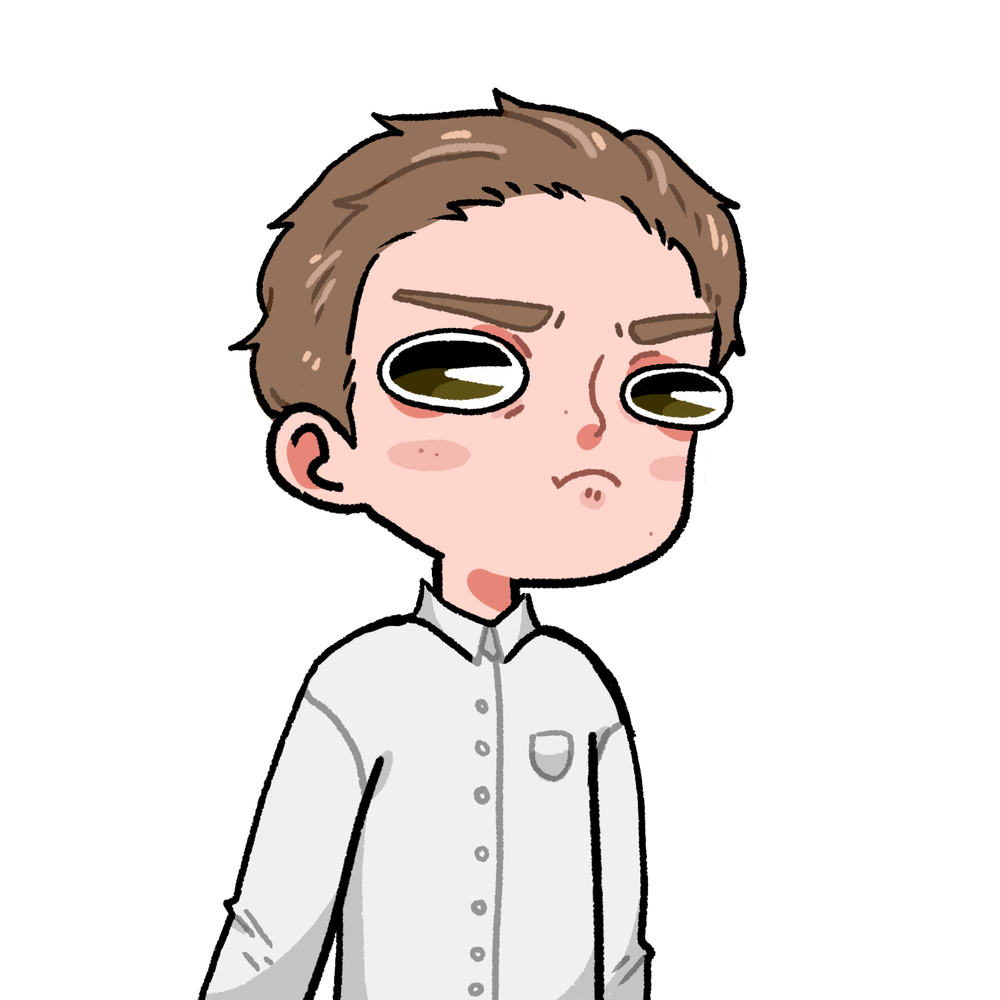

On est arrivés.
On est arrivés.
Le bus se gara devant la mairie de la ville.
 Fontenay-sous-bois… Quelle ville de merde !
Fontenay-sous-bois… Quelle ville de merde !
J’avoue ça pue, on a croisé que des clochards depuis qu’on est arrivé, et on a assisté à trois fusillades…
 C’est normal, c’est samedi soir.
C’est normal, c’est samedi soir.
 Bon, le labo est là. La question c’est comment on rentre.
Bon, le labo est là. La question c’est comment on rentre.
 TOOOH !
TOOOH !
Kiki prit de l’élan, de fonça tête baissée sur une vitre, qui éclata en morceau.
Bien joué kiki !
 Ok, j’avoue il a été utile.
Non content d’avoir défoncé une fenêtre, Alexis se jeta sur la porte qu’il put ouvrir, permettant aux autres de passer.
Et dire que ce sont nos impôts qui vont payer les réparations…
Osef, on habite pas ici.
Ils entrèrent dans le bâtiment, et découvrirent une énorme trappe blindée, très très TRÈS mal dissimulée sous un tapis.
 Comment ça s’ouvre ?
Comment ça s’ouvre ?
En tirant sur le levier.
Haha très drôle…
CLIC
La trappe s’ouvrit, en faisant un vacarme monstrueux.
Que… Comment ça…
Ivan ressorti de derrière un rideau.
Je t’avais dit qu’il fallait trouver le levier ! Pourquoi personne ne m’écoute jamais ?
On se demande bien…
Ils empruntèrent un grand escalier, menant à un souterrain étroit. Le métal noir était éclairé par des rayures bleu fluorescentes. On aurait cru à un décor de science-fiction. Ils avancèrent les uns derrière les autres, Guillaume en tête. Ils arrivaient tantôt dans d’immenses salles qu’ils traversaient sur un pont, tantôt les couloirs demandaient de se baisser. Aden, plan en mains, guidait la troupe à travers ce labyrinthe. Il fallait absolument qu’il pense à remercier son assistant secret. Ils arrivèrent finalement à une salle dans laquelle reposait différentes cuves, conservant des créatures effrayantes dans un liquide vert lumineux. Alexis, qui luttait contre sa peur de l’obscurité, se tenait fermement à Thibault, ce qui n’était pas pour déplaire à ce dernier. Au fond, Thibault trouvait Alexis adorable… certes, il était un peu simplet, mais c’était une véritable incarnation de la gentillesse. Il trouvait profondément injuste le comportement de Guillaume à son égard, d’ailleurs. Thibault savait qu’Alexis ne pourrait jamais comprendre ce qu’il ressentait pour lui, mais le fait de l’avoir proche de lui en ce moment, le remplissait de joie. Malheureusement, toutes les bonnes choses ont une fin, et celle-ci arriva lorsqu’Alexis trébucha et renversa Thibault, qui heurta de plein fouet une des cuves.
Putain de merde Kiki !
Ça va calme toi ! Je n’ai rien…
CRRKK
Et voilà ! L’impact n’a pas supporté le changement brutal de température !
Et merde !
La cuve explosa sous la pression.
 MROOOAAARR
MROOOAAARR
 Oh mon dieu…
Oh mon dieu…
 C’est fini pour nous chef.
C’est fini pour nous chef.
 Qu’est-ce que c’est que cette chose…
Qu’est-ce que c’est que cette chose…
Mais c’est immense !
Une créature bipède de deux mètres se tenait devant eux. L’énorme musculature de cet être était effrayante. Jamais un humain ne pourrait battre…
Jonathan ?!